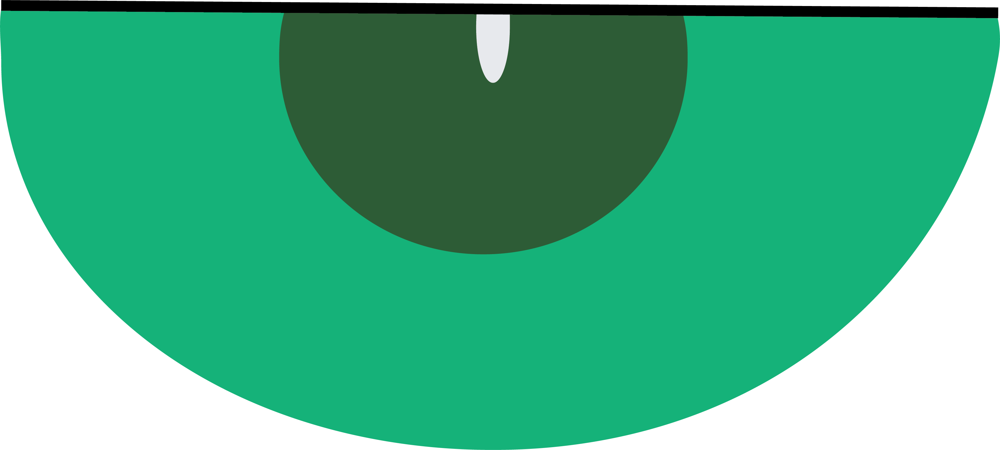
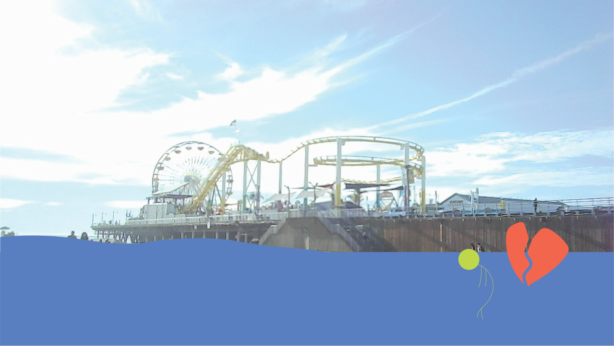
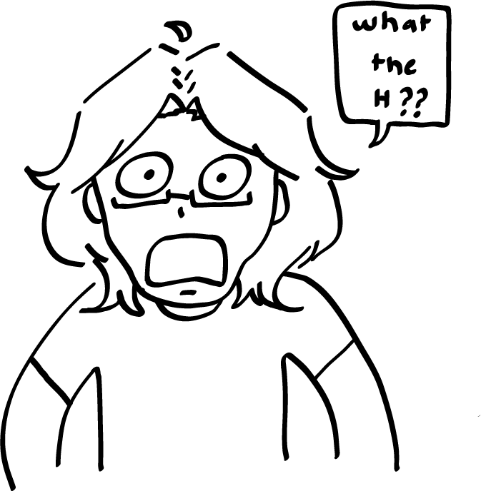

I wanted to use this specific photo I took simply because I liked how it came out and seeing it also reminds me of the pleasant memories of that day. The reason I chose this kind of "story" for the illustration was because of a conversation my cousins and I had when we were walking at Santa Monica. There were not one, but TWO proposal set ups at the beach and we were wondering what would happen if they were to get stood up (we're not sure if they did or didn't). I used the shaper tool for the ground, the ellipse and arc tool for the stick figure, and the pen tool for the heart. The eraser tool was very handy for the heart break effect!
